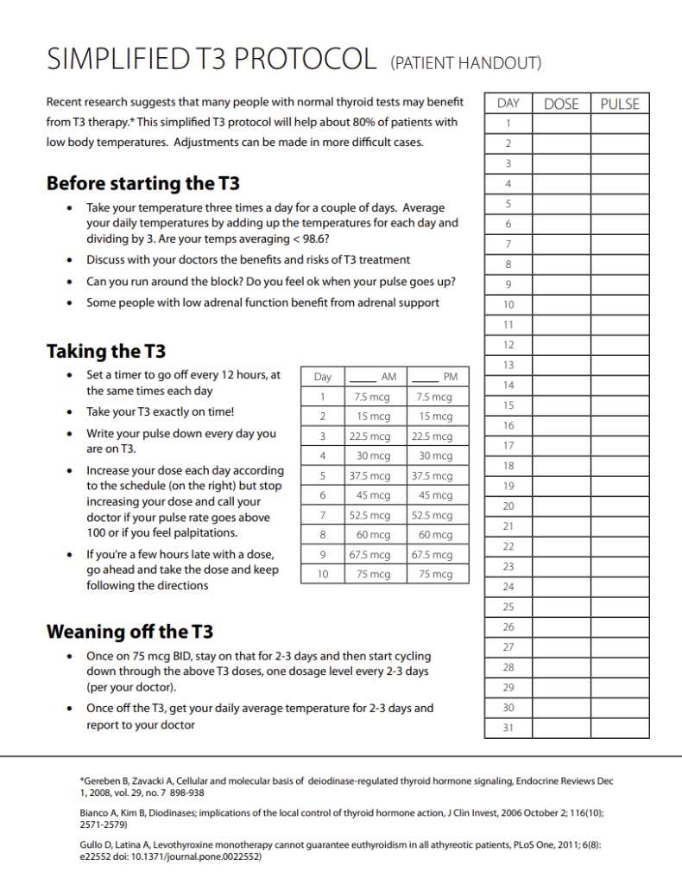

Phase 4: T3 Thyroid Therapy (Metabolic Reset)
Many Long Covid and CFS sufferers are stuck in a metabolic "hibernation" or cell danger response. Even with normal blood tests, tissue-level hypothyroidism may be present. This phase uses T3 (Liothyronine) to reboot the body's thermostat. Some people may need to use T3 therapy during the fasting periods based on symptoms. These are usually addressed with custom monthly protocols.
Therapy Qualification
Core Requirements (Must-Have)
If > 90 bpm: → CAUTION: Medical supervision mandatory.
Common Supporting Symptoms
(Check how many apply – more YES = better fit)
- Profound fatigue / unrefreshing sleep
- Brain fog, poor concentration, memory issues
- Cold hands/feet even in warm environments
- Easy weight gain or difficulty losing weight
- Dry skin, brittle hair, or hair loss
- Low mood (depression, anxiety, irritability)
- Muscle/joint aches or fibromyalgia-like pain
- Headaches or fluid retention
Quick Self-Assessment
Low BBT + Low Pulse + 3+ Symptoms above → You may be a good candidate.
Track temperature, pulse, and symptoms for 1 week to confirm.
Introduction to T3 Therapy
Overview: This approach uses T3 (liothyronine) to address chronic fatigue symptoms usually associated with low body temperature and pulse. The goal is a metabolic "Reboot".
Critical Concept: Slow Release T3 (SR-T3)
The Scorch Protocol strongly recommends Slow Release T3 (SR-T3).
- Why? SR-T3 provides stable blood levels, avoids "spikes", and covers the full 24-hour cycle.
- Evening Dosing: Because it is slow release, you CAN and SHOULD take it in the evening (unlike instant T3) to support metabolism during sleep.
- Convenience: Reduces the need for constant micro-dosing.
Where to Source SR-T3
One of the best vetted sources for Slow Release T3 is chronic-illness.ca. They specialize in compounded SR-T3 and can ship worldwide.
This is a trusted source used by many in the chronic illness community for high-quality, properly formulated slow-release thyroid medication.
Yannick also personally helps acquire the medication in more complicated cases where they cannot get it shipped.
The Scorch T3 Cycle (30-Day Protocol)
This protocol involves a rapid "Summer Metabolism" simulation followed by a taper. It is designed to force the body out of hibernation.
| Phase | Duration | Detailed Strategy |
|---|---|---|
| The Ramp (Days 1-10) |
10 Days |
The Climb: Increase total daily dosage by approx 15 mcg every single
day. Example: Day 1 = 15mcg, Day 2 = 30mcg, Day 3 = 45mcg... Often max is 150mcg Split: Divide total into 2 doses (Morning & Evening). |
| The Peak | 1-3 Days | Hold the max tolerated dose briefly purely to break the resistance. Stop increasing if pulse > 100bpm or anxiety peaks. |
| The Taper (Days 11-30) |
20 Days |
The Descent: Slowly reduce dosage back to zero. This gradual wean allow your thyroid gland to restart its own production seamlessly without a crash. |

Figure 1: Simplified T3 Protocol Dosing & Tracking Chart
Safety Checks
Maintenance & Support
- Support: Methylated B-Complex, Vitamin C, Electrolytes.
- Diet: High protein to support the metabolic fire.
- Bone health: Supplement with higher dose K2 for bone health and clotting health during t3 therapy.
- Success Indicator: Upon finishing the taper, your waking temperature should stabilize closer to 36.5°C - 37.0°C (97.7°F - 98.6°F) without medication.
- HGH Therapy: Often synergize around round 2-3 to prevent T3 complications.
Need Personalized Guidance?
Protocol adjustments can be nuanced. There are at least 6 major variations to the scorch protocol based on symptoms with dozens of tweaks. If you need 1-on-1 support, consider booking with Yannick Wolfe.
What you get: Access to years of highly synthesized data, a personal researcher and coach all in one. You also get someone that will personally help make sure you get any medications you may need to succeed.
Guarantee: If the protocol does not work you get a full refund. Also half the payment is not collected until the protocol is finished (6-12months).
If you would like to ask a question about a specific part of the scorch protocol, please use the forums
Visit DryFastingClub.comT3 Therapy Log & Findings
Log temperatures, dosages, and heart rate response daily.